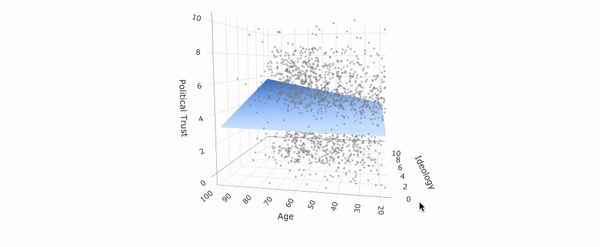

Welcome! I am a Postdoc at the Amsterdam School of Communication Research (University of Amsterdam). I gained my PhD from the European University Institute (Florence), visiting the Hertie School Data Science Lab in Berlin and the psychology department of New York University. For my research in computational social science with a focus on political communication, I use experimental methods, surveys and text-as-data. Previous studies brought me to the University of Oxford, to Université Panthéon-Sorbonne in Paris and Universität Bayreuth. Before my PhD, I worked for the media/tech startup Opinary and wrote on politics and culture for various German and English news sites, and I now occasionally write data-journalist pieces.
News
July 18, 2022. New study in PNAS: In this study we explore the curious link between the increase of wolf attacks on livestock and voting. The project has been covered by Vice and the Canadian National Broadcaster Canadian National Broadcaster, among others.
July 7, 2022. Blog post on "Fixed vs. random effects for browsing data": In this post I discuss two common modelling approaches for hierarchical data when there is little within-unit variation. Including simulations in R.
February 18, 2022. New chapter in "APIs for social scientists: A collaborative review": I contributed a chapter about the Google News API to this great open-source review edited by Paul C. Bauer and Camille Landesvatter.
September 16, 2021. Data-journalistic post on medium (in German): Germany is voting soon, and does not seem thrilled with its candidates. As I show in this post using fourty years of data, Armin Laschet and Annalena Baerbock are unpopular like hardly any candidate before them.
August 15, 2021. Data-journalistic piece for the Economist:"Can Europe go green without nuclear power?" As Germany is poised to shut down its nuclear plants, I was wondering how well the country fares in terms of greenhouse gas reduction.
July 6, 2021. Data visualization article in Socius: Co-authored with Paul C. Bauer, we point to the intruiging distribution of media trust in Germany. See "Horseshoe Patterns: Visualizing Partisan Media Trust in Germany".
May 6, 2021. Data-journalism blog on medium: Scotland votes and extended its voting rights to non-nationals. In this post, I examine some survey data what effects this might have on the main parties. In short: Good for the Greens, bad for the Conservatives.

January 15, 2021. Data-journalism blog on medium: I started my own blog with short data journalism pieces! The first post (in German) explores the career of the strange and controversial term "Israelkritik" in the German media, decisively ahead of "Chinakritik" or "Russlandkritik", using data from the newspaper archive Factiva. The graph below shows the occurence of the terms across time:
December 15, 2020. New working paper: In this study, I test whether US conservatives or liberals are better at discerning true from false news. I use an original and innovative data set: In contrast to previous studies, I randomly sample the news items I show to participants from a larger collection (built from the Google News API and fact-checkers).
October 21, 2020. Shiny app for teaching regression: This app let's you visualize regression with one or two predictors, in order to get an intuitive understanding what "ordinary least squares" does.
Older news ￫